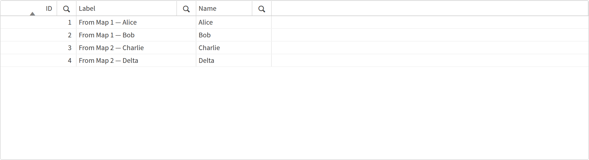

I was building an extract from a new source system when I started seeing data I didn't expect. Values that should have been there weren't, and I couldn't figure out why — the script looked fine. After some head-scratching I traced it back to a mapping table that was picking up rows it shouldn't have been. Turns out the table was auto-concatenating, and I hadn't even considered that auto-concatenation applied to mapping tables. I assumed it was a regular-table thing. It isn't.
Digging deeper into mapping tables
My first instinct was to use Concatenate(), the same way
you'd combine two regular tables:
// Mapping table 1 — IDs 1 and 2
MAP_ID_Label:
MAPPING LOAD * INLINE [
ID, Label
1, 'From Map 1 — Alice'
2, 'From Map 1 — Bob'
];
// Attempting to append IDs 3 and 4
Concatenate(MAP_ID_Label)
MAPPING LOAD * INLINE [
ID, Label
3, 'From Map 2 — Charlie'
4, 'From Map 2 — Delta'
];This immediately throws an error:
Table 'MAP_ID_Label' not found
The error occurred here:
Concatenate(MAP_ID_Label)
MAPPING LOAD * INLINE [...]
The reason is that mapping tables are not regular tables. They live in a completely
separate namespace — Qlik's script engine keeps them apart from the data model entirely.
Concatenate() only knows about regular tables, so it can't find
MAP_ID_Label by name.
The trick — same name triggers auto-concatenation
What does work is reusing the same table name for a second
MAPPING LOAD. Qlik treats this the same way it treats regular tables with
duplicate names: it auto-concatenates. The second load appends its rows to the first,
and you end up with one combined mapping table.
// Mapping table 1 — IDs 1 and 2
MAP_ID_Label:
MAPPING LOAD * INLINE [
ID, Label
1, 'From Map 1 — Alice'
2, 'From Map 1 — Bob'
];
// Same name → auto-concatenates onto the first mapping table
MAP_ID_Label:
MAPPING LOAD * INLINE [
ID, Label
3, 'From Map 2 — Charlie'
4, 'From Map 2 — Delta'
];
// ApplyMap now resolves all four IDs
FACT_Result:
LOAD
ID,
Name,
ApplyMap('MAP_ID_Label', ID, '[Not found]') AS Label
RESIDENT Transactions;
DROP TABLE Transactions;
This is genuinely useful when your lookup data comes from multiple sources — different
QVDs, different inline blocks, different database tables — and you want a single
ApplyMap() call to cover all of them.
The danger — unintended auto-concatenation
The same behaviour that makes this trick possible is also what caused my original
data discrepancy. If you reuse a mapping table name by accident — say, you have a
subroutine that builds a MAP_ID_Label table, and you call it twice —
the second load silently appends to the first instead of replacing it. You get a
bloated mapping table with duplicate or conflicting keys, and ApplyMap()
will resolve to whichever value appears first for that key.
The script won't warn you. The app will load without errors. The wrong values will just quietly appear in your charts.
The fix — DROP MAPPING TABLE
Qlik has a dedicated statement for cleaning up mapping tables: DROP MAPPING TABLE. Use it immediately after you've finished applying a mapping table, before anything else in the script has a chance to reuse that name.
MAP_ID_Label:
MAPPING LOAD
ID,
Label
FROM [lib://DataFiles/Labels.qvd] (qvd);
FACT_Result:
LOAD
ID,
Name,
ApplyMap('MAP_ID_Label', ID, '[Not found]') AS Label
RESIDENT Transactions;
DROP MAPPING TABLE MAP_ID_Label; // clean up immediately after useDROP MAPPING TABLE is separate from DROP TABLE — they operate
on different namespaces. DROP TABLE won't touch a mapping table, and
DROP MAPPING TABLE won't touch a regular table. If you try to drop the
wrong kind, the statement silently does nothing.
Summary
- Concatenate() doesn't work on mapping tables — they're not in the regular table namespace, so the engine can't find them by name.
- Reusing the same mapping table name auto-concatenates — useful when building a lookup from multiple sources.
- The same behaviour causes silent bugs if a mapping table name is reused unintentionally — wrong values, no errors.
- Use DROP MAPPING TABLE after each use to prevent names from leaking into later parts of the script.